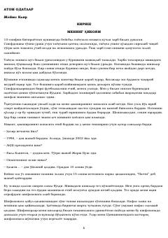

AOKichik odatlar orqali hayotingizni butunlay o'zgartiring.
Ushbu kitob James Clearning shaxsiy tajribasi va ilmiy tadqiqotlarga asoslangan holda kichik odatlarning hayotga katta ta'sirini tushuntiradi. Muallif to'rt bosqichli odat modeli (signal, istak, javob va mukofot) orqali yaxshi odatlarni shakllantirish va yomon odatlardan qutulish yo'llarini amaliy tarzda bayon etadi. Kitob o'quvchilarga o'z salohiyatini to'liq namoyon qilish uchun kichik, lekin doimiy o'zgarishlar qilishni o'rgatadi.